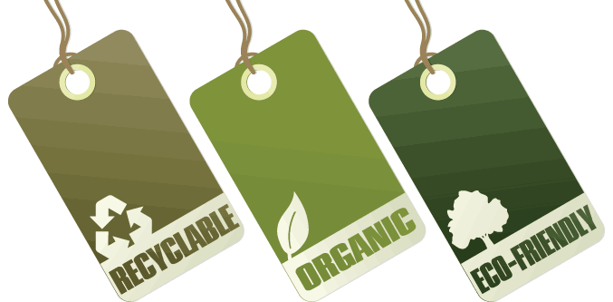

Sobre o projeto
A iniciativa COMUD (COnsciência, MUdança e Doação), partiu da problemática do consumismo de roupas presente na nossa sociedade, onde muitas pessoas compram inúmeras peças para usar apenas uma vez, ou nem mesmo vestirem. No COMUD é possível o desapego de peças que você não quer mais trocando por outras que você prefira ou as doando para aquelas pessoas que estão precisando, ONG’s, orfanatos ou iniciativas de assistência humana.
Missão
Troca e doação de roupas de forma consciente, justa e acessível.
Visão
Ser uma startup que faz a conexão entre pessoas e interesses para um consumo consciente da moda, através de doações ou trocas que os clientes achem justas, dando total flexibilidade e liberdade para as negociações e políticas de devolução.
Valores Organizacionais
Nossa startup busca atuar sempre com integridade, inteligência, inspiração, flexibilidade, valorização do ser humano, política de ganha-ganha, responsabilidade social e sustentabilidade ambiental.
Política de frete e de entrega
Como serão compras baseadas em trocas, o pagamento do frete será por conta de cada cliente, uma vez que como serão os mesmos caminhos, somente de pontos de partida diferentes, os fretes também serão praticamente os mesmos, logo, cada um poderá fazer o pagamento de sua respectiva postagem. Para controle de entrega, têm-se um acordo com os Correios para que só seja feito o envio, após a postagem dos dois produtos, que serão controlados através de códigos. Tendo como prazo para isso, até 3 dias após a geração do código, caso não seja localizado a postagem de um dos produtos, emite-se uma notificação, para o cliente retirar o produto postado, com a devolução do pagamento.
SOBRE NÓS
Adrian Ferreira
Cargo
Tenho o sonho ajudar as pessoas através da minha profissão como desenvolvedor. Não só criando coisas e resolvendo problemas, mas desenvolvendo algo que as ajude em seus objetivos de vida, diminuir seus sofrimentos e aumentar suas alegrias.
Aline Távora
Cargo
Desde pequena descubro o mundo através do computador. Cursei técnico em Computação Gráfica, tecnólogo em Análise e Dev. de Sistemas e tive a oportunidade de participar do bootcamp Dev. Full-Stack Java Jr, e quero proporcionar oportunidades para outras pessoas.
Luma Canuto
Cargo
Luma vivenciou muita desigualdade e desperdício. Após muita reflexão e questionamento, decidiu mudar à uma profissão para Dev. Web Java Jr onde encontrou na COMUD sua garra e forma de mudar o mundo, uma muda de cada vez.
Matheus Matiusch
Cargo
Como Dev Web Java Jr., tenho como objetivo transformar a vida de pessoas e empresas, melhorando e facilitando seus processos/atividades através da tecnologia.

Stefany Pedrosa
Cargo
Sendo Dev. Web Java Jr, acredito no poder da informação, do conhecimento e da ajuda ao próximo. Buscando estar atualizada e aprender ao máximo em experiências e convivências diárias.